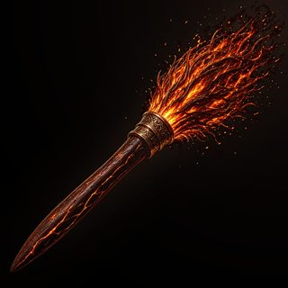

Cinderbolt
The Cinderbolt settles into your hand like it had been waiting.
The Cinderbolt is built for speed and show; loves a dramatic takeoff. It will not make you faster. It will make you look like yourself.
Flight (for show)
Speed4/10
Altitude5/10
Also (deeply scientific)
Drama5/10
Snack Pouch3/10
Squirrel Spite3/10
Mid-air Humming10/10
Gossip Range6/10
How Much It Judges You3/10